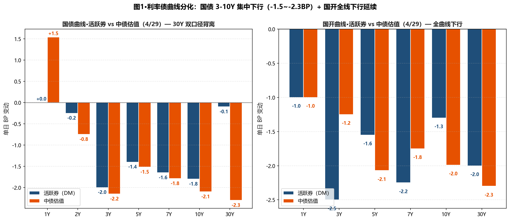
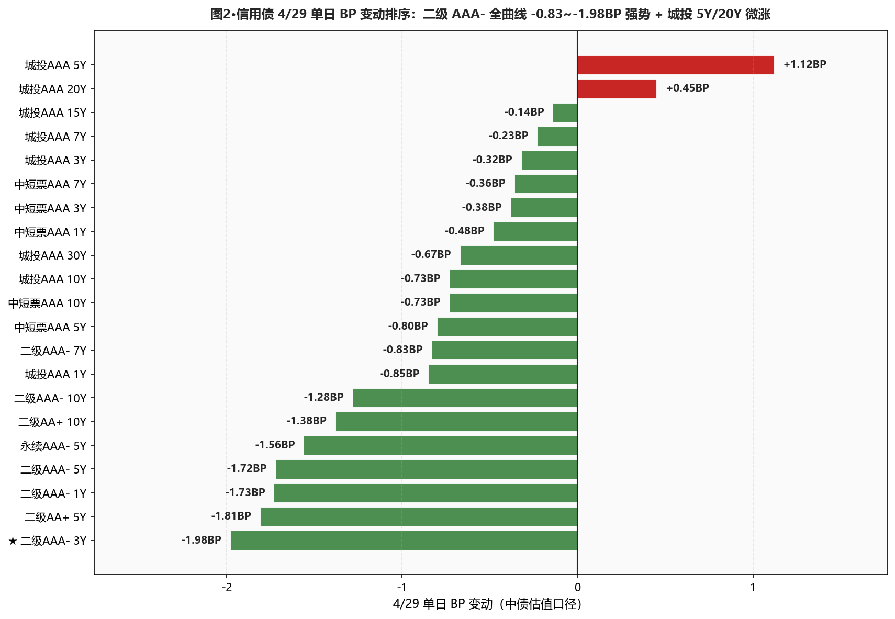
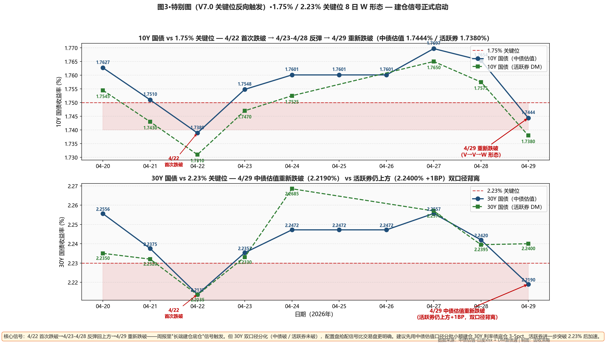

市场定性 长端重新跌破关键位（建仓信号触发）+ 二级持续反弹 + 政治局会议措辞偏宽松 + 30Y 特别国债新券今日上市—— 10Y 国债活跃券 -1.80BP 报 1.7380%（距 1.75% 下方 1.20BP，重新跌破）/ 中债估值 1.7444%（下方 0.56BP）；30Y 国债中债估值 -2.30BP 报 2.2190%（下方 1.10BP，跌破）但活跃券 2.2400%（上方 1.00BP）双口径背离； 国债 3-10Y 集中下行 -1.5~-2.3BP；30Y 特别国债新券今日上市后老券午后转强； 二级资本债延续反弹 — AAA- 3Y -1.98BP / 5Y -1.72BP / 1Y -1.73BP；本行 5Y 二级 4/27-4/29 三日累计 -3.51BP（+1.66 → -3.45 → -1.72）； 城投 AAA 30Y -0.67BP 重新独立下行（4/28 +0.35 中断后恢复）； DR007 +0.99BP 至 1.3729%、低 OMO 2.71BP（再收窄）； 政治局会议措辞变化：货币政策"前瞻性、灵活性、针对性"+流动性"合理充裕"去掉"合理"二字（偏宽松信号）。
- 🔴 建仓信号触发长端利率债建仓启动：10Y 国债中债估值/活跃券双重重新跌破 1.75%；30Y 中债估值跌破 2.23%（活跃券仍上方 1BP，配置盘比交易盘更明确）；按周报"2.32-2.35% 区间建仓"逻辑——但 30Y 跌破后市场情绪转强、继续回调可能有限；本日小额试探建仓 30Y 国债 3pct（用中债估值口径），活跃券进一步突破 2.23% 后加速到 5-7pct
- ✅ 5Y 二级AAA- 加仓节奏维持三日累计 -3.51BP（4/27 +1.66 → 4/28 -3.45 → 4/29 -1.72）、本行 4/27-4/28 加仓策略 ✓ 完全命中；分位升至 35-37% 已具足赔率；本日继续加仓 1-2pct，至总仓位 28-30%；3Y 二级 -1.98BP 也大涨、考虑加 2-3pct 5-7Y 二级补充期限多样化
- ✅ 城投AAA 30Y 维持15-20%底仓 等利差4/28 短暂中断后 4/29 重新独立下行 -0.67BP；30Y-10Y 城投利差 30.39BP 几乎持平、距 25BP 目标位仍 5.39BP；等待利差进一步压缩到 25BP 时一次性建满 20%；今日 5Y 城投 +1.12BP 微涨提示中段资金流出、不主动加仓
- ⚠️ 国开品种凸点 — 隐含税率反向走阔10Y 国开-国债隐含税率 8.51 → 8.62BP（+0.11BP）；昨日急速收窄今日微幅反向；30Y 国开 -2.30BP 跑赢 30Y 国债（中债 -2.30BP 持平）；等回到 11BP+ 再考虑加仓 10Y 国开，当前不主动加
- ⚠️ 杠杆维持 105-110% 跨节后再评估DR007 vs OMO 2.71BP（昨日 3.70BP，再收窄）；R-DR007 2.61BP（+0.06BP，微幅走阔）；DR007 低 OMO 已持续 4 周；NCD 1Y -0.75BP 重回下行至 1.4425%；跨节后（5/6）观察资金回归再决定回到 110-115%
- ① 30Y国债 vs 2.23% ⚠️ 中债估值跌破·活跃券未破：活跃券 2.2400%（上方 1.00BP）/ 中债估值 2.2190%（下方 1.10BP）→双口径背离的建仓启动——按中债估值口径执行小额建仓 30Y 利率债 3pct；活跃券突破 2.23% 后加速到 5-7pct
- ② 10Y国债 vs 1.75% 🔴 双重跌破：活跃券 1.7380%（下方 1.20BP）/ 中债估值 1.7444%（下方 0.56BP）→10Y 利率债底仓启动——10Y 国债加仓 2-3pct（注意短期反弹空间有限、不追多）
- ③ R-DR007 利差 >15BP ○ 未触发：当前 2.61BP（+0.06BP）、距阈值 12.39BP→维持 105-110% 杠杆
- ④ 10Y中短票AAA-3Y 利差 ≤25BP ○ 未触发：当前 45.88BP（-0.35BP）、距阈值 20.88BP→价差仍宽，暂不切换
- ⑤ 30Y-10Y 城投AAA 利差 ≤25BP ○ 未触发：当前 30.39BP（+0.06BP）、距阈值 5.39BP→10Y 城投今日 -0.73BP 大涨、利差扩大压力短期减小；等城投 30Y 持续独立抗跌
A 段·详细数据
① 资金面 Wind EDB 实测
央行今日 7 天逆回购投放 259 亿元（60 亿到期、净投放 199 亿元）——较 4/28 的 435 亿/385 亿继续缩量；两日累计净投放 584 亿、跨节呵护态度仍在线。Wind EDB 实测：DR001 1.2385%（-0.12BP）、DR007 1.3729%（+0.99BP）、R001 1.3122%（-0.07BP）、R007 1.3990%（+1.05BP）；DR007 低于 OMO 2.71BP（昨日 3.70BP，再收窄 0.99BP），DR007 低 OMO 已持续约 4 周；R-DR007 2.61BP（+0.06BP，微幅走阔但仍属温和）；NCD 1Y 1.4425%（-0.75BP，重回下行）、NCD 3M 1.3750%（+0.00BP，持平）。X-repo 隔夜 1.22% 持稳（4/28 是 1.28-1.29%）；非银隔夜各类券种几乎无价差、报价 1.4% 左右——分层进一步消失。
| 指标 | 4/28 (%) | 4/29 (%) | 变动 |
|---|---|---|---|
| DR001 | 1.2397 | 1.2385 | -0.12BP |
| DR007 | 1.3630 | 1.3729 | +0.99BP |
| R001 | 1.3129 | 1.3122 | -0.07BP |
| R007 | 1.3885 | 1.3990 | +1.05BP |
| NCD 1Y | 1.4500 | 1.4425 | -0.75BP |
| NCD 3M | 1.3750 | 1.3750 | +0.00BP |
| DR007 低于 OMO | 3.70BP | 2.71BP | -0.99BP |
| R-DR007 利差 | 2.55BP | 2.61BP | +0.06BP |
② 利率债 — 中债估值（曲线、配置盘定价口径） 中债估值 xlsx
4/29 中长端集中下行：国债 3Y -2.15BP / 5Y -1.52BP / 7Y -1.79BP / 10Y -2.10BP / 30Y -2.30BP；异常分化：1Y +1.54BP（跨月）、20Y +1.17BP（30Y 老券效应延续）；国开延续追涨 — 5Y -2.07BP / 7Y -1.75BP / 10Y -1.99BP / 30Y -2.30BP；30Y-10Y 期限利差从 47.66BP 微幅收窄到 47.46BP（-0.20BP）；10Y-1Y 利差从 61.41BP 收窄到 57.77BP（-3.64BP，长端下行+短端上行双向贡献）。
| 品种 | 4/28 (%) | 4/29 (%) | BP |
|---|---|---|---|
| 国债 1Y | 1.1513 | 1.1667 | +1.54BP |
| 国债 2Y | 1.2640 | 1.2565 | -0.75BP |
| 国债 3Y | 1.2960 | 1.2745 | -2.15BP |
| 国债 5Y | 1.4862 | 1.4710 | -1.52BP |
| 国债 7Y | 1.6410 | 1.6231 | -1.79BP |
| 国债 10Y | 1.7654 | 1.7444 | -2.10BP |
| 国债 15Y | 2.0556 | 2.0510 | -0.46BP |
| 国债 20Y | 2.2053 | 2.2170 | +1.17BP |
| 国债 30Y | 2.2420 | 2.2190 | -2.30BP |
| 国开 1Y | 1.3865 | 1.3765 | -1.00BP |
| 国开 3Y | 1.5506 | 1.5381 | -1.25BP |
| 国开 5Y | 1.6487 | 1.6280 | -2.07BP |
| 国开 7Y | 1.7965 | 1.7790 | -1.75BP |
| 国开 10Y | 1.8505 | 1.8306 | -1.99BP |
| 国开 30Y | 2.3730 | 2.3500 | -2.30BP |
③ 利率债 — 活跃券 DM查债通
活跃券大幅下行：10Y 国债"26附息国债05" -1.80BP 报 1.7380%（距 1.75% 下方 1.20BP，重新跌破）、30Y 国债"26附息国债02" -0.10BP 报 2.2400%（距 2.23% 上方 1.00BP，仍未破但临近）、10Y 国开"25国开20" -1.30BP 报 1.8510%、3Y 国债 -2.00BP / 5Y 国债 -1.40BP（中段集中下行）；30Y 国债活跃券今日早盘受 30Y 特别国债新券上市冲击、午后期货拉升带动转强；活跃券 vs 中债估值双口径背离 — 活跃券 +1BP（上方）vs 中债估值 -1.10BP（下方）—— 配置盘抢配信号（中债估值由配置盘定价）比交易盘更明确。国债期货全线收涨：30Y 主连 +0.20% 报 113.400、10Y +0.06%、5Y +0.05%、2Y +0.02%。
| 品种 | 4/29 收盘 (%) | BP |
|---|---|---|
| 国债 1Y | 1.1675 | +0.00BP |
| 国债 3Y | 1.2700 | -2.00BP |
| 国债 5Y | 1.4660 | -1.40BP |
| 国债 7Y | 1.6160 | -1.65BP |
| 国债 10Y | 1.7380 | -1.80BP |
| 国债 30Y | 2.2400 | -0.10BP |
| 国开 5Y | 1.5875 | -1.55BP |
| 国开 7Y | 1.6800 | -2.25BP |
| 国开 10Y | 1.8510 | -1.30BP |
| 国开 30Y | 2.1100 | -2.00BP |
④ 信用债 — 中债估值（24 个核心品种） 中债估值 xlsx
呈现"二级资本债持续大涨（4/28 反弹的延续）+ 城投 30Y 重新独立下行 + 中段微调"格局： ★ 二级 AAA- 3Y -1.98BP（最强、3Y 集中收复）/ 5Y -1.72BP / 1Y -1.73BP / 10Y -1.28BP / 7Y -0.83BP；AA+ 5Y -1.81BP / 10Y -1.38BP；永续 AAA- 5Y -1.56BP / 3Y -1.52BP——本行 5Y 二级 AAA- 4/27-4/29 三日累计 -3.51BP，加仓策略持续命中； 城投 AAA 30Y -0.67BP 重新独立下行（4/28 短暂中断后恢复）、10Y -0.73BP / 7Y -0.23BP / 1Y -0.85BP； 城投 AAA 5Y +1.12BP / 20Y +0.45BP / AA+ 5Y ++0.12BP 微涨——中段资金分流到二级资本债； 中短票 AAA 全曲线 -0.36~-1.19BP 普涨。
| 品种 | 4/28 (%) | 4/29 (%) | BP |
|---|---|---|---|
| 中短票AAA 1Y | 1.5118 | 1.5070 | -0.48BP |
| 中短票AAA 3Y | 1.7202 | 1.7164 | -0.38BP |
| 中短票AAA 5Y | 1.8791 | 1.8711 | -0.80BP |
| 中短票AAA 7Y | 2.0411 | 2.0375 | -0.36BP |
| 中短票AAA 10Y | 2.1825 | 2.1752 | -0.73BP |
| 中短票AA+ 1Y | 1.5418 | 1.5370 | -0.48BP |
| 中短票AA+ 3Y | 1.7702 | 1.7764 | +0.62BP |
| 中短票AA+ 5Y | 1.9391 | 1.9311 | -0.80BP |
| 城投AAA 1Y | 1.5211 | 1.5126 | -0.85BP |
| 城投AAA 3Y | 1.7420 | 1.7388 | -0.32BP |
| 城投AAA 5Y | 1.8571 | 1.8683 | +1.12BP |
| 城投AAA 7Y | 2.0154 | 2.0131 | -0.23BP |
| 城投AAA 10Y | 2.2123 | 2.2050 | -0.73BP |
| 城投AAA 15Y | 2.3332 | 2.3318 | -0.14BP |
| 城投AAA 20Y | 2.4589 | 2.4634 | +0.45BP |
| ★ 城投AAA 30Y | 2.5156 | 2.5089 | -0.67BP |
| 二级AAA- 1Y | 1.5208 | 1.5035 | -1.73BP |
| ★ 二级AAA- 3Y | 1.7914 | 1.7716 | -1.98BP |
| 二级AAA- 5Y | 1.9727 | 1.9555 | -1.72BP |
| 二级AAA- 7Y | 2.1635 | 2.1552 | -0.83BP |
| 二级AAA- 10Y | 2.2717 | 2.2589 | -1.28BP |
| 二级AA+ 5Y | 2.0145 | 1.9964 | -1.81BP |
| 二级AA+ 10Y | 2.3022 | 2.2884 | -1.38BP |
| 永续AAA- 5Y | 1.9963 | 1.9807 | -1.56BP |
B 段·今日关键事件
① 30Y 特别国债新券今日上市 — 30Y 老券早盘受压午后转强：30Y 老券"26附息国债02"早盘受到压制（新券上市直接冲击）；但午后 30Y 期货连续拉升（30Y 主连 +0.20%）、带动老券收益率转为下行；活跃券最终 -0.10BP 报 2.2400%（距 2.23% 上方仅 1BP）；中债估值 -2.30BP 报 2.2190%（已跌破 2.23%）——双口径背离的关键时点。市场对 30Y 特别国债吸纳消化能力强于预期。
② 政治局会议措辞分析（华泰固收解读）：货币政策新提法"增强货币政策前瞻性、灵活性、针对性"——"灵活性"暗示重点除传导效率、还要注意随形势变化快速调整；流动性方面去掉"合理"二字（原来"保持流动性合理充裕"→现"保持流动性充裕"）——"合理"更偏中性、"充裕"更偏宽松，从边际倾向看是宽松信号强化。对本行启示：这与今日长端再次跌破关键位形成同向印证、支持长端建仓启动。
③ A 股大涨债市仍升温 — 跷跷板减弱：上证 +0.71% 报 4107.51（重返 4100）、深证 +1.96%、创业板 +2.51%、北证 50 +0.48%、科创 50 +0.33%；A 股全天成交 2.61 万亿（前一日 2.55 万亿）；储能/电池/光伏/创新药/算力租赁多板块大涨。但债市继续升温说明"流动性环境主导变量"——卖方共识印证。
④ 二级资本债领涨延续："26交行二级资本债01BC"、"26中行二级资本债01BC"、"26招商银行永续债01"收益率均下行 2BP 左右（活跃个券与中债估值口径一致）。
C 段·重点可视化（V7.0 固定2张+动态1张）

图1·利率债曲线分化：国债 3-10Y 集中下行（-1.5~-2.3BP）+ 国开全线下行延续

图2·信用债 4/29 单日 BP 变动排序：二级 AAA- 全曲线 -0.83~-1.98BP 强势 + 城投 5Y/20Y 微涨

图3·特别图（V7.0 关键位反向触发）·1.75% / 2.23% 关键位 8 日 W 形态 — 建仓信号正式启动
本日报为 V7.2 标准（V6.0 程序化 BP + V6.1 HTML 从0生成 + V7.1-A 后置 BP 自检通过 + V7.2 Pages API 兜底）；图3 V7.0 动态信号触发"关键位反向"模板。